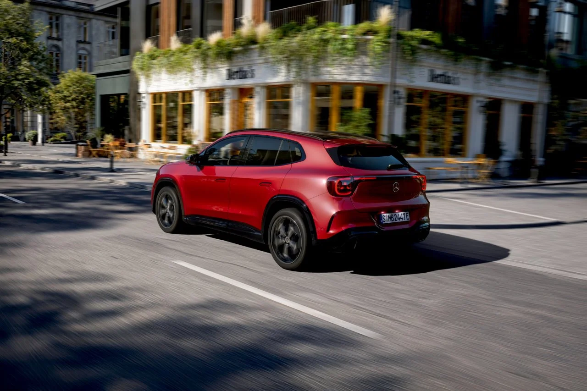
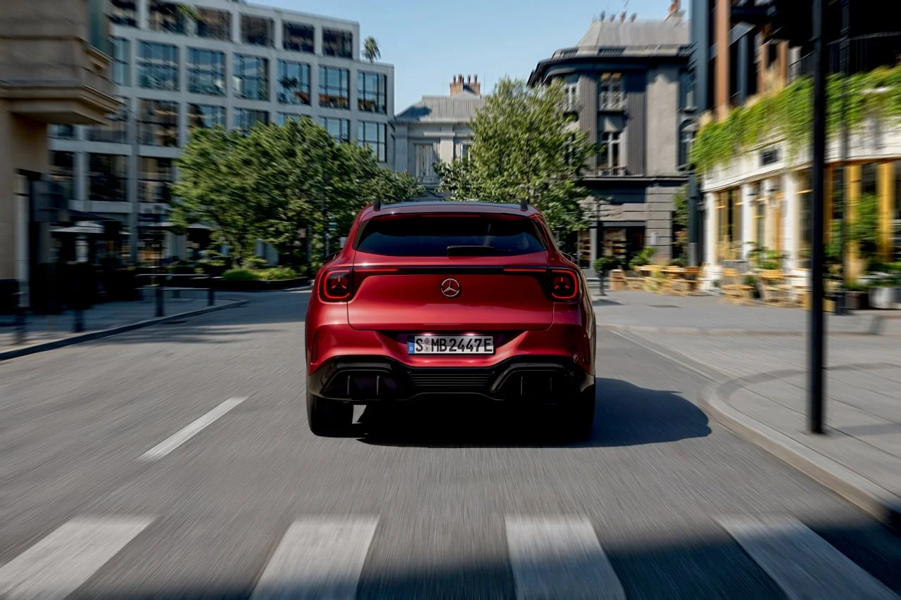
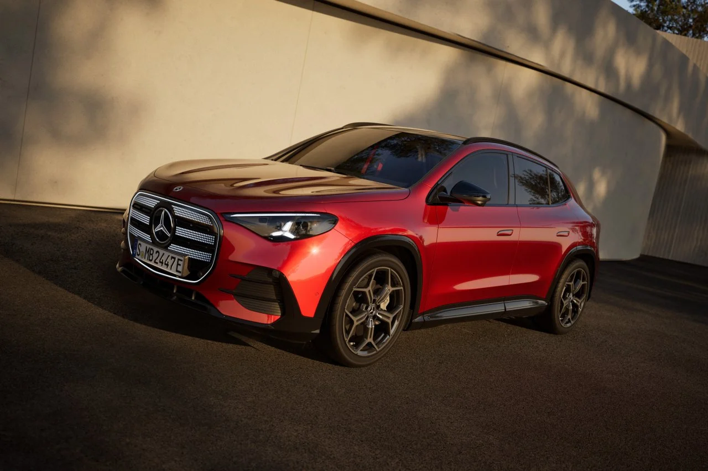

▲ 3세대로 완전변경된 메르세데스-벤츠 신형 GLA. 이번 세대부터는 전기차 버전이 가장 먼저 출시됐다 ⓒ Mercedes-Benz Media
메르세데스-벤츠가 지난 7월 29일(현지시간) 3세대로 완전변경된 신형 GLA를 세계 최초로 공개했습니다. 가장 눈에 띄는 변화는 파워트레인 출시 순서입니다. 이전까지 벤츠의 소형 SUV는 내연기관 모델이 먼저 나오고 전동화 버전이 뒤따르는 방식이었지만, 신형 GLA는 이 공식을 뒤집었습니다. GLA 200 일렉트릭, GLA 250+ 일렉트릭, GLA 350 4매틱 일렉트릭까지 3종의 완전 전기차가 오는 11월 유럽 시장에 먼저 출시되고, 1.5리터 가솔린 터보에 전기모터를 결합한 마일드하이브리드 2종은 2027년 초에야 합류할 예정입니다. 벤츠 소형차 최초로 완전 전기차가 라인업의 선봉에 서는 셈입니다.
1. 배터리 & 주행거리 — 벤츠 소형 SUV 최초 657km

▲ 신형 GLA는 이전 세대보다 전고를 20mm 낮추고 휠베이스를 61mm 늘려 비례를 다듬었다 ⓒ Mercedes-Benz Media
신형 GLA 일렉트릭은 배터리·모터 조합에 따라 3개 트림으로 나뉩니다. 기본형인 GLA 200 일렉트릭은 리튬인산철(LFP) 방식 58kWh 배터리와 165kW(224마력) 후륜 모터를 얹어 WLTP 기준 최대 447km를 달립니다. 후륜구동인 GLA 250+ 일렉트릭은 니켈망간코발트(NMC) 방식 85kWh 배터리와 200kW(272마력) 모터를 조합해 최대 657km까지 주행거리를 늘렸는데, 이는 이번 신형 GLA 라인업 전체를 통틀어 가장 긴 수치이자 벤츠 소형 SUV 세그먼트에서는 처음 보는 주행거리입니다. 듀얼모터 사륜구동 방식의 최상위 GLA 350 4매틱 일렉트릭은 같은 85kWh 배터리를 쓰면서 합산 출력을 260kW(354마력)까지 끌어올려 정지 상태에서 시속 100km까지 5.4초 만에 도달하고, 주행거리는 최대 643km 수준입니다.
| 트림 | 배터리 | 최고출력 | 0→100km/h | 최대 주행거리 |
|---|---|---|---|---|
| GLA 200 일렉트릭 | 58kWh(LFP) | 165kW(224마력) | 8.1초 | 447km |
| GLA 250+ 일렉트릭 | 85kWh(NMC) | 200kW(272마력) | 7.3초 | 657km |
| GLA 350 4매틱 일렉트릭 | 85kWh(NMC) | 260kW(354마력) | 5.4초 | 643km |
충전 성능도 눈여겨볼 대목입니다. 신형 GLA는 벤츠가 전기차 전용으로 새로 설계한 MMA(Mercedes Modular Architecture) 플랫폼을 기반으로 800V급 전장 구조를 갖췄습니다. GLA 250+·350 4매틱은 최고 320kW DC 급속충전을 지원해 10분 충전만으로 최대 270km(WLTP)를 추가로 달릴 수 있고, 10→80% 충전에는 약 22분이 걸립니다. 기본형인 GLA 200은 최고 200kW로 충전 속도가 다소 낮지만 그래도 10→80%를 20분 안팎에 마칠 수 있습니다. AC 완속충전은 기본 11kW, 옵션으로 22kW까지 선택할 수 있습니다.
2. MMA 플랫폼 — 전기차 우선 설계, 하이브리드도 품는다
신형 GLA의 근본적인 변화는 겉모습보다 플랫폼에 있습니다. 이번 세대는 벤츠가 CLA 3세대, 차세대 GLB와 함께 공유하는 MMA(Mercedes Modular Architecture) 플랫폼을 기반으로 만들어졌습니다. MMA는 전기차 구동계를 최우선으로 두고 설계됐지만 내연기관 파워트레인까지 유연하게 수용할 수 있다는 점이 특징인데, 이 덕분에 벤츠는 하나의 플랫폼에서 순수 전기 모델과 고효율 마일드하이브리드 모델을 함께 생산할 수 있게 됐습니다. 신형 GLA가 전기차 버전부터 먼저 출시된 배경에도 이런 플랫폼 설계 방향이 자리하고 있는 셈입니다.
2027년 초 합류할 마일드하이브리드 버전에는 새로 개발된 1.5리터 직렬 4기통 가솔린 터보 엔진에 22kW(약 30마력) 전기모터를 결합한 파워트레인이 들어갑니다. 이 전기모터는 8단 습식 듀얼클러치 변속기(8F-eDCT)에 통합되는 방식이며, 최대 1.3kWh 용량의 48V 배터리를 탑재해 저속 구간에서 순수 전기 주행을 지원하고 최대 25kW까지 회생제동 에너지를 회수합니다. 차체·서스펜션·인테리어 등 나머지 요소는 전기차 버전과 대부분 공유하는 구조입니다.
3. 디자인 & 인테리어 — 빛나는 그릴, 커진 차체

▲ 후면은 좌우 테일램프를 얇은 광원 띠로 연결해 전동화 모델임을 강조했다 ⓒ Mercedes-Benz Media
신형 GLA는 이전 세대보다 전고를 20mm 낮추고 휠베이스를 61mm 늘려 2,790mm로 키우면서 실내 공간과 비례를 동시에 다듬었습니다. 전장 4.57m, 전폭 1.87m, 전고 1.60m로 몸집도 소폭 커졌고, 공기저항계수는 0.27Cd를 기록합니다. 가장 눈에 띄는 디자인 변화는 전면부입니다. 그동안 준대형 이상급에서만 볼 수 있던 벤츠 특유의 대형 그릴이 처음으로 소형 세그먼트에 적용됐는데, 608개의 폴리카보네이트 광원이 그릴 안쪽에 촘촘히 배치돼 별처럼 반짝이는 조명 효과를 냅니다. 후면은 좌우 테일램프를 얇은 광원 띠로 이어 붙여 전동화 모델임을 한눈에 알아볼 수 있게 했습니다.
실내는 벤츠의 최신 MBUX 슈퍼스크린 구조를 따릅니다. 10.25인치 계기판과 14인치 중앙 디스플레이가 기본이며, 옵션으로 조수석 앞에 14인치 화면을 추가해 3연 와이드 스크린 구성도 가능합니다. 생성형 AI 기반 MBUX 가상비서가 챗GPT·마이크로소프트 빙·구글 제미나이와 연동되고, 최대 850와트 앰프의 16채널 버메스터 3D 서라운드 사운드도 옵션으로 제공됩니다. 트렁크 용량은 이전 세대보다 70리터 늘어난 410리터이며, 전기차 모델에는 별도로 107리터 프렁크(전방 트렁크)가 마련됩니다.
4. 가격 & 국내 출시 가능성은?

▲ 소형 세그먼트 최초로 적용된 대형 그릴에는 608개의 폴리카보네이트 광원이 촘촘히 배치됐다 ⓒ Mercedes-Benz Media
독일 기준 가격은 부가세 포함 GLA 200 일렉트릭이 약 4만 8,600유로(약 7,800만 원), GLA 250+ 일렉트릭이 약 5만 5,000유로(약 8,800만 원), 최상위 GLA 350 4매틱 일렉트릭이 약 5만 8,100유로(약 9,300만 원)부터 시작합니다. 원화 환산액은 참고용 추정치이며, 국가별 세제와 인증 절차에 따라 실제 판매가는 달라질 수 있습니다. 주문은 지난 7월 30일부터 유럽에서 시작됐고, 실제 인도는 11월부터 이뤄질 예정입니다. 미국 시장에는 이보다 늦은 2027년 하반기에 출시될 것으로 알려졌습니다.
종합하면 신형 GLA는 단순한 완전변경을 넘어, 벤츠가 소형 SUV 세그먼트에서도 전기차를 '메인 라인업'으로 내세우기 시작했다는 점에서 상징적인 모델입니다. MMA 플랫폼을 통해 전기차와 마일드하이브리드를 한 차체에서 함께 생산하는 방식은 앞으로 나올 벤츠의 다른 소형·준중형 모델에도 이어질 전략으로 보입니다.